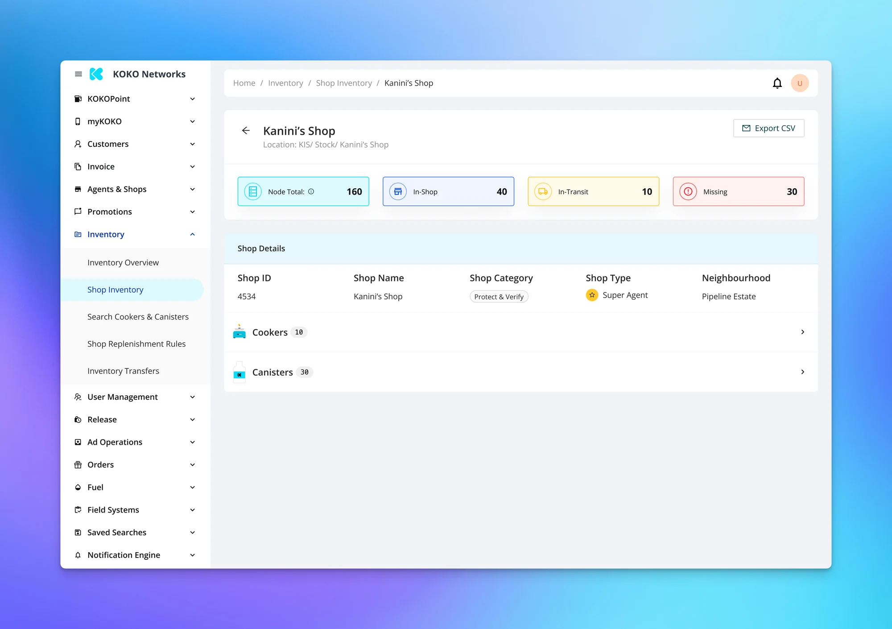
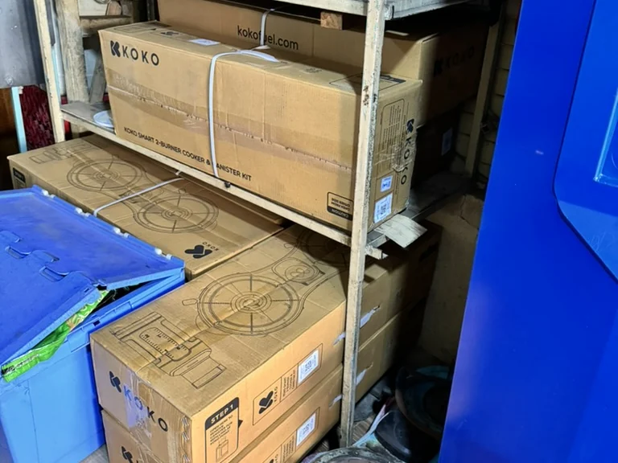
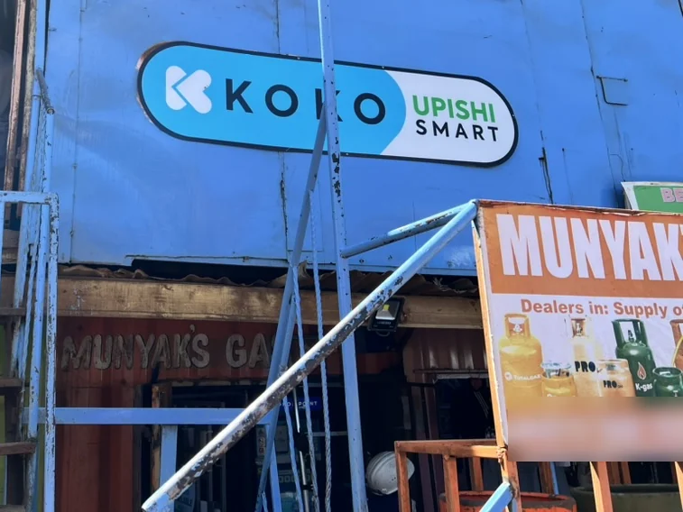
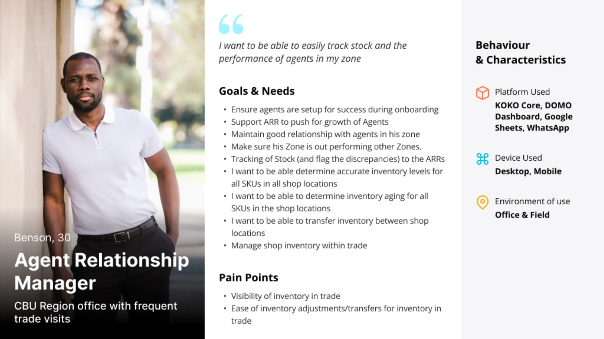
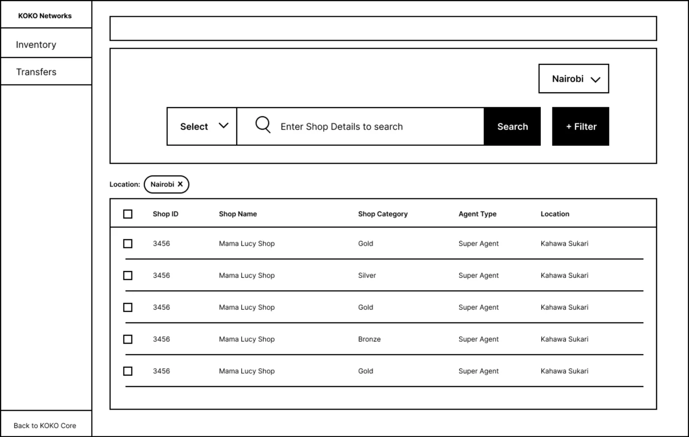
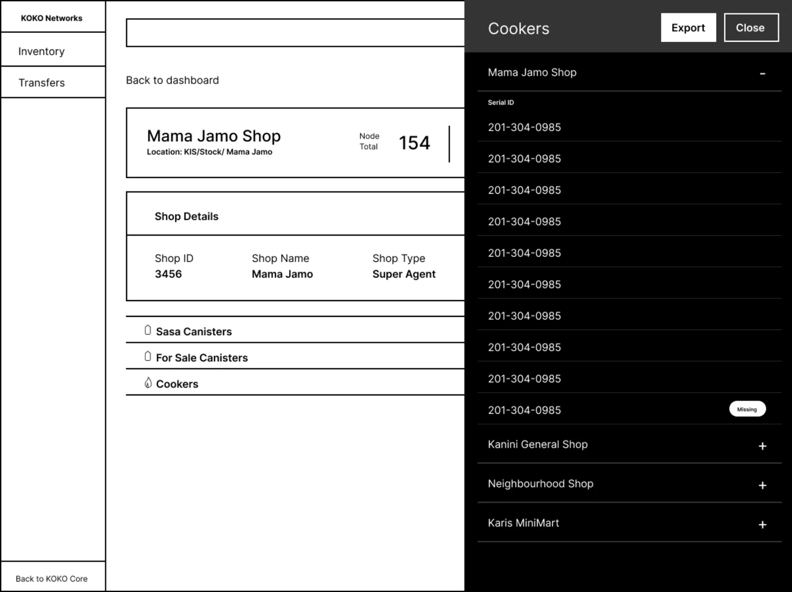
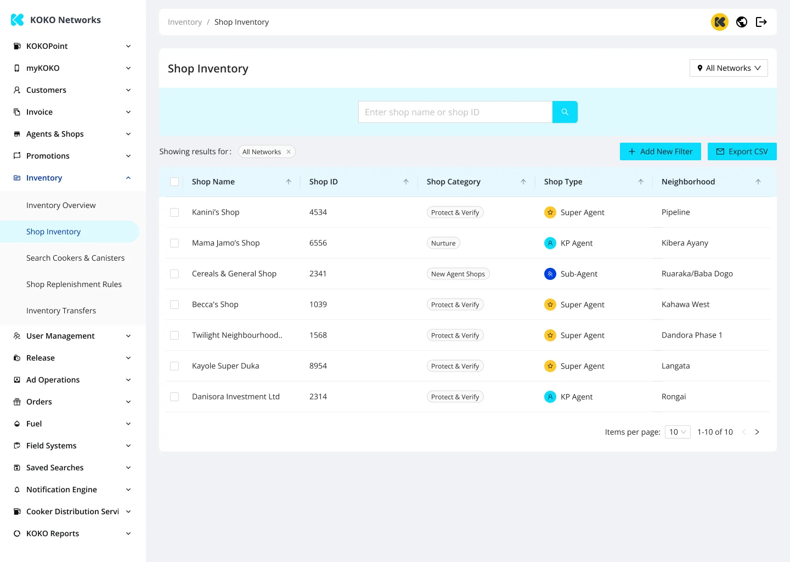
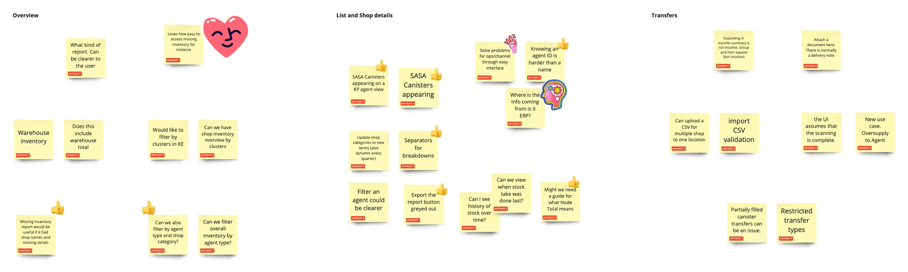

Inventory Management Redesign
The tool had the data. It just didn't match how anyone actually worked.

The tool had the data. It just didn't match how anyone actually worked.

KOKO Networks, a clean energy company, runs a high-volume retail operation — daily stock movements across a distributed network of agent shops and warehouses. The operations team had an inventory management tool that tracked everything. On paper, it worked.


In practice, it was slowing everyone down.
Stock levels were hard to trust. Simple questions — what do we have, where is it, what's missing — required manual checks or pulling in an analyst. Teams spent more time reconciling data than making decisions. And as the network scaled, these inefficiencies became directly expensive: missed stock, delayed replenishment, and growing friction between field agents and central teams.
The system was built around how inventory was stored in the database, not how operations teams actually thought about stock. The result:
Critical actions were buried behind dense navigation. Teams couldn't discover key insights without guidance. The interface assumed familiarity that new team members didn't have. High-frequency tasks carried unnecessary cognitive load.
The tool wasn't missing features. It was missing clarity.
I was brought in to figure out why an essential tool was creating friction despite having the right data underneath. My work sat between product, UX, and operations — interviewing internal users, mapping actual decision workflows, and identifying where the system's structure diverged from how people actually worked.

The focus was deliberately narrow: surface the information and actions that mattered most in daily workflows, reduce cognitive load on high-frequency tasks, and make the tool usable without training or hand-holding.


Clarity over configurability. Instead of exposing everything the system could do, I reshaped the experience around what teams needed to see and act on daily. Features that were technically powerful but rarely used were de-emphasized. High-impact workflows were surfaced and simplified.

Opinionated views over flexible ones. This meant saying no to configurability that added complexity, and yes to default views that helped teams act faster. Not every user wanted the same thing, but every user needed to answer the same core questions quickly.

Surface exceptions early. Rather than making teams hunt for problems, the redesign brought anomalies — low stock, mismatches, pending actions — to the surface where they could be caught before they became operational failures.
The redesign improved discoverability of key inventory actions, increased speed and confidence on day-to-day tasks, and reduced the team's dependence on analysts and secondary tools — all without changing the underlying system.
More importantly, it shifted the tool from something teams worked around to something they relied on.
Designing a self-checkout product sellers would trust enough to collect payments through — then watching it get shelved before launch.
View case study 2022Introducing bank transfers as a payment method for Nigerian merchants who didn't trust card payments.
View case study 2021Replacing four separate onboarding tools with one centralized KYC system across four countries.
View case study